# display grid
- 通过设置 CSS 属性
display: grid;可以定义一个 CSS 网格。接着可以使用grid-template-rows和grid-template-columns属性定义网格的列属性 (columns) 和行属性 (rows)。 - 使用这些属性定义的网格被称为 * 显式网格 (explicit grid)
- 通过
display grid来打开grid布局，下面将都会使用stylus预处理器来演示stylus -w index.styl -o index.css
# 基本概念
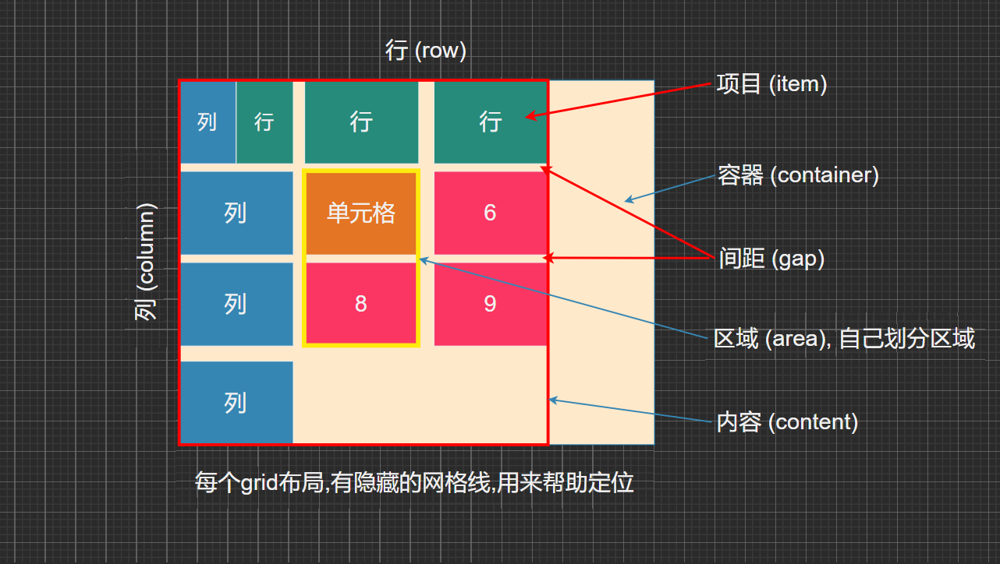
# 基本结构
HTML结构
<main class="box"> | |
<div class="item item1">A</div> | |
<div class="item item2">B</div> | |
<div class="item item3">C</div> | |
<div class="item item4">D</div> | |
<div class="item item5">E</div> | |
<div class="item item6">F</div> | |
<div class="item item7">G</div> | |
<div class="item item8">H</div> | |
<div class="item item9">I</div> | |
<div class="item item10">J</div> | |
</main> |
- 这里先给 10 个子盒子定义不同颜色样式，后面就不再重复这些代码了
.item | |
color #fff | |
font-size 50px | |
background-color #e91e63d | |
.item1 | |
background-color #ef342a | |
.item2 | |
background-color #f68f26 | |
.item3 | |
background-color #4ba946 | |
.item4 | |
background-color #0376c2 | |
.item5 | |
background-color #c077af | |
.item6 | |
background-color #f8d29d | |
.item7 | |
background-color #b5a87f | |
.item8 | |
background-color #d0e4a9 | |
.item9 | |
background-color #4dc7ec | |
.item10 | |
background-color #ef342a |
# grid-template-columns
grid-template-columns该属性是基于 网格列。的维度，去定义网格线的名称和网格轨道的尺寸大小。
main | |
display grid | |
width 400px | |
height 400px | |
border 5px solid skyblue | |
grid-template-columns 100px 100px 100px |
- 此时效果就是三列，每列都是 100px
# repeat
-
第一个参数是重复的次数，第二个参数是所要重复的值
-
例如下面这两行代码效果是一样的
grid-template-columns 100px 100px 100pxgrid-template-columns repeat(3, 100px)
# auto-fill
auto-fill，有时，单元格大小是固定的，但是容器的大小不确定，这个属性就会自动填充- 比如下面这个代表每列盒子是 100px 排布，如果剩余位置小于 100px 就会换行显示
main | |
display grid | |
width 400px | |
height 400px | |
border 5px solid skyblue | |
grid-template-columns repeat(auto-fill, 100px) |
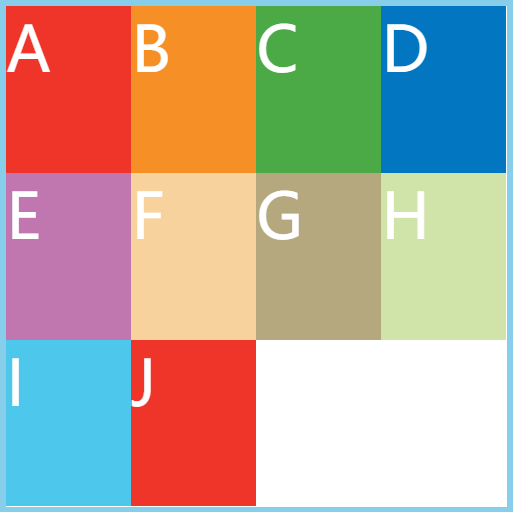
# fr
-
fr，为了方便表示比例关系，网格布局提供了 fr 关键字 (fraction 的缩写，意为 '' 片段 '') -
grid-template-columns repeat*(3, 1fr)宽带平均分成 3 份
main | |
display grid | |
width 400px | |
height 400px | |
border 5px solid skyblue | |
grid-template-columns repeat(3, 1fr) |
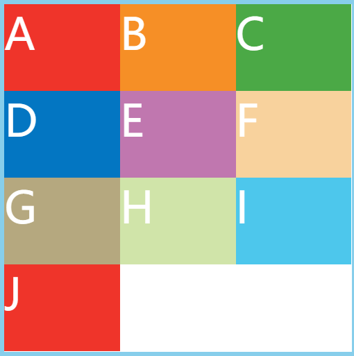
- 又比如
grid-template-columns 1fr 2fr 3fr- 意味着三列，第一列占
1 / (1 + 2 + 3) = 六分之一，依次类推占六分之二与六分之三
- 意味着三列，第一列占
main | |
display grid | |
width 400px | |
height 400px | |
border 5px solid skyblue | |
grid-template-columns 1fr 2fr 3fr |
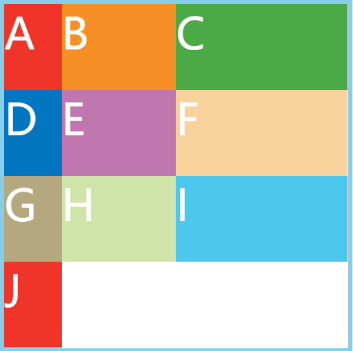
# minmax()
- minmax (), 函数参数一个长度范围，表示长度就在这个范围之中，它接收两个参数，分别为最小值和最大值
main | |
display grid | |
border 5px solid skyblue | |
grid-template-columns 1fr minmax(250px, 1fr) |
- 这里写段 JS 代码测试就可以看出宽度最小不可小于
250px，最大不可大于1fr
const box = document.querySelector('.box') | |
const items = document.querySelectorAll('.item') | |
function getElWidth(el) { | |
return el.clientWidth | |
} | |
let width = getElWidth(box) | |
function getWindowInfo() { | |
if (getElWidth(box) != width) { | |
for (let i = 0; i < items.length; i++) | |
items[i].textContent = items[i].offsetWidth + 'px' | |
} | |
width = getElWidth(box) | |
} | |
window.addEventListener('resize', getWindowInfo); |
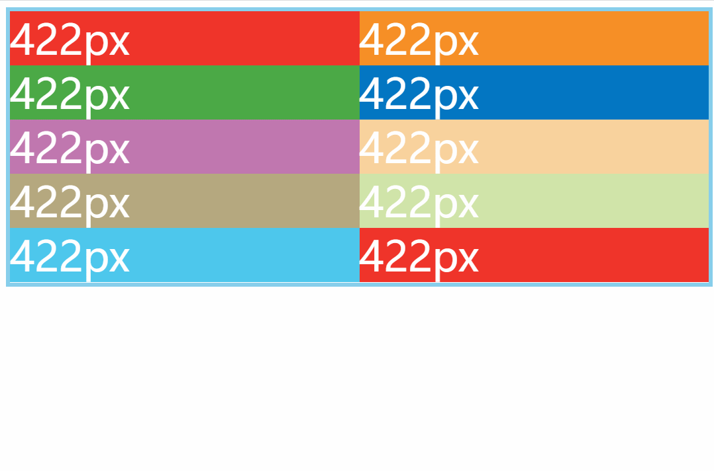
# auto
- auto，表示由浏览器自己决定长度
grid-template-columns 150px auto 150px, 表示两边 150px，中间自动分配
main | |
display grid | |
border 5px solid skyblue | |
grid-template-columns 150px auto 150px |
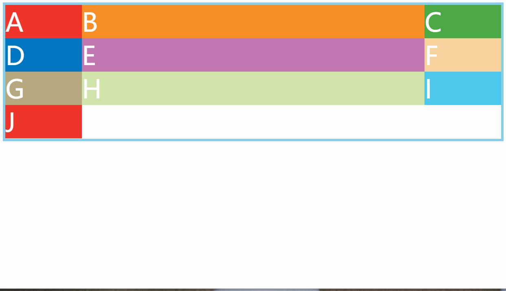
# grid-auto-rows
-
<length>一个非负的长度。
-
<percentage>相对于网格窗口块尺寸的非负 `` 值。如果网格容器的块尺寸是不确定的，则百分比值将被视为
auto。 -
<flex>非负的、以
fr为单位的维度指定轨道的弹性因子。每个<flex>- 尺寸的轨道都按其弹性因子的比例挤占剩余空间的一部分。 当使用在minmax()符号外时，意味着最小值为auto(例：minmax(auto, <flex>)). -
max-content关键词，指明由网格元素中占用空间最大的那一个来决定轨道的尺寸。
-
min-content关键词，指明由网格元素中占用空间最小的那一个来决定轨道的尺寸。
-
minmax(min, max)函数符号，定义一个不小于
min且不大于max的尺寸范围。如果max比min小，则max会被忽略，函数会被录作min处理。作为最大值，<flex>值设置了轨道的弹性因子。作为最小值，会被当作 0 处理（或者最小内容 —— 当网格容器指定了尺寸为最小内容）。 -
auto关键字，当用来指定最大值时与最大内容一致，当用来指定最小值时，它表示轨道中所有网格元素最小尺寸中的最大值（由
min-width/min-height指定）。注意：
auto轨道尺寸（且仅有auto轨道尺寸）可配合align-content和justify-content属性使用。 -
这里随便演示下
main | |
display grid | |
width 400px | |
height 400px | |
border 5px solid skyblue | |
grid-template-columns repeat(3, 100px) | |
grid-auto-rows repeat(4, 150px) |
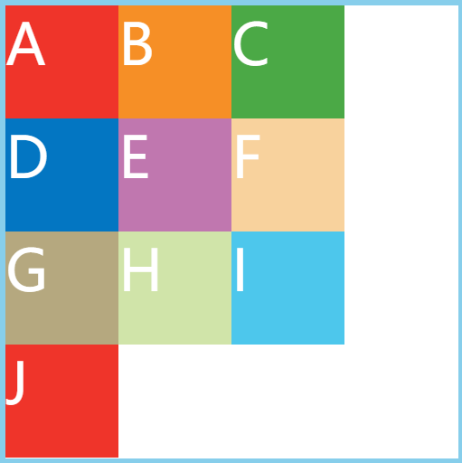
# row-gap & column-gap
- 就是 item 相互之间的距离
- 注意：根据最新标准，上面这个属性名的
grid-前缀已经删除：grid-column-gap、grid-row-gap、grid-gap写成column-gap、row-gap、gap
main | |
display grid | |
width 400px | |
height 400px | |
border 5px solid skyblue | |
grid-auto-rows repeat(4, 100px) | |
grid-template-columns 100px 100px 100px | |
row-gap 20px | |
column-gap 20px |
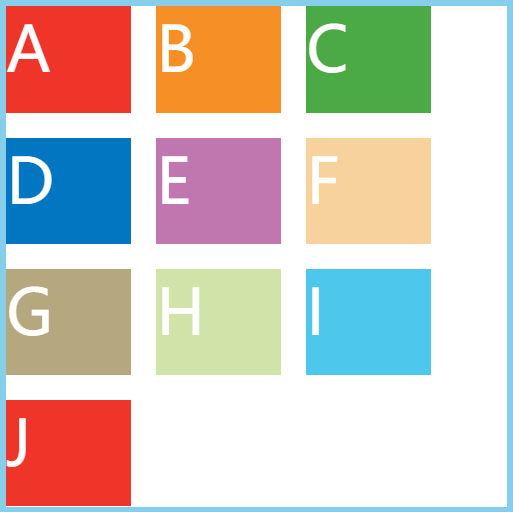
- 当然可以直接简写成
gap 20px与上面效果是一样的
# grid-template-areas
- 一个区域有单个或多个单元格组成，由你决定 (具体使用，需要在项目属性里面设置)
// 代表 A B C D E F F H I 各是一块区域 | |
grid-template-areas 'a b c' 'd e f' 'g h i' | |
// 代表 ABC 是一块区域 DEF 是一块区域 GHI 是一块区域 | |
grid-template-areas 'a a a' 'b b b' 'c c c' | |
// 代表 AC 是一块区域 DF 是一块区域 GI 是一块区域 中间的忽略掉 | |
grid-template-areas 'a . c' 'd . f' 'g . i' |
# grid-auto-flow
-
划分网格以后，容器的子元素会按照顺序，自动放置在每一个网格。默认的放置顺序是 "先行后列"，即先填满第一行，再开始放入第二行 (子元素的排放顺序)
-
默认是
row -
那么下面设置
grid-auto-flow column这行代码的效果如下
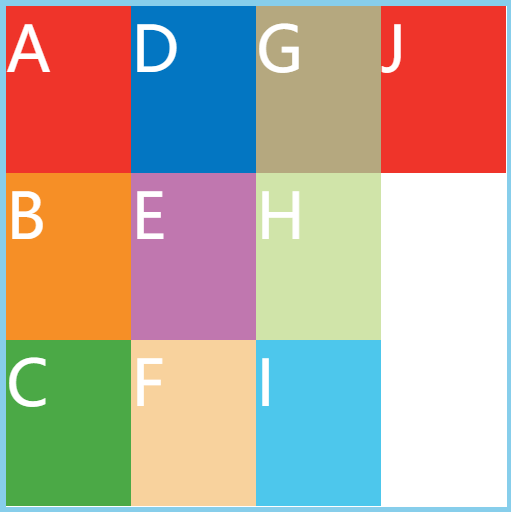
# row dense
- 先加上基本属性
main | |
display grid | |
width 400px | |
height 400px | |
border 5px solid skyblue | |
grid-auto-rows repeat(4, 100px) | |
grid-template-columns repeat(3, 100px) |
- 然后来给
item1 item2加上这句代码看看效果
.item1 | |
grid-column: 1 / 3 | |
background-color #ef342a | |
.item2 | |
grid-column: 1 / 3 | |
background-color #f68f26 |
- 可以看到每个 item 的宽度本来是 100px, 但是
item1 item2设置了grid-column: 1 / 3，此时宽度是 200px 了，那么 一行是排不下的自然会换行，所以就是下面的效果了
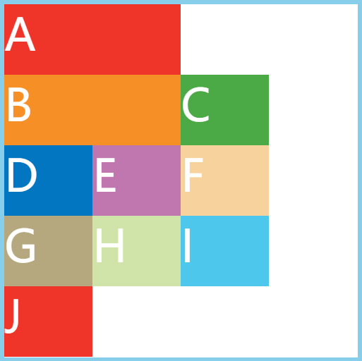
- 此时我们给
main加上grid-auto-flow row dense这句代码，再来看看效果

# justify-items & align-items
- 容器属性 justify-items (水平方向) /align-items (垂直方向)
- 设置
单元格内容的水平和垂直的对齐方式
# justify-items center
- 设置
justify-items center的效果
main | |
display grid | |
width 400px | |
height 400px | |
border 5px solid skyblue | |
grid-auto-rows repeat(4, 100px) | |
grid-template-columns repeat(3, 100px) | |
justify-items center |
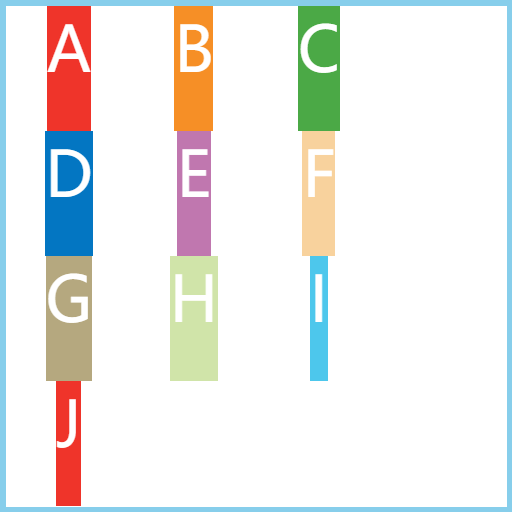
# align-items center
- 设置
align-items center的效果
main | |
display grid | |
width 400px | |
height 400px | |
border 5px solid skyblue | |
grid-auto-rows repeat(4, 100px) | |
grid-template-columns repeat(3, 100px) | |
align-items center |
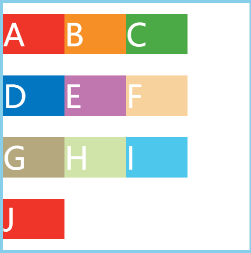
# 同时设置
main | |
display grid | |
width 400px | |
height 400px | |
border 5px solid skyblue | |
grid-auto-rows repeat(4, 100px) | |
grid-template-columns repeat(3, 100px) | |
align-items center | |
justify-items center |
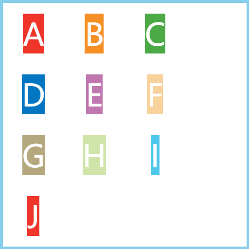
place-items center center这行代表是上面两行代码的简写，也可写成 ``place-items center`, 与上面的效果是一致的
# justify-content & align-content
- 容器属性 justify-content (水平方向) /align-content (垂直方向)
- 设置整个内容区域的水平和垂直的对齐方式
- justify-content：
start | end | center | stretch | space-around | space-between | space-evenly - align-content：
start | end | center | stretch | space-around | space-between | space-evenly - 下面演示一个常用的
center
# justify-content center
main | |
display grid | |
width 400px | |
height 400px | |
border 5px solid skyblue | |
grid-auto-rows repeat(4, 100px) | |
grid-template-columns repeat(3, 100px) | |
justify-content center |
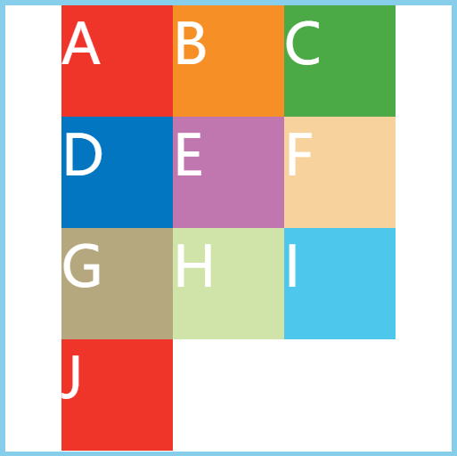
# align-content center
main | |
display grid | |
width 400px | |
height 400px | |
border 5px solid skyblue | |
grid-auto-rows repeat(4, 100px) | |
grid-template-columns repeat(3, 100px) | |
align-content center |
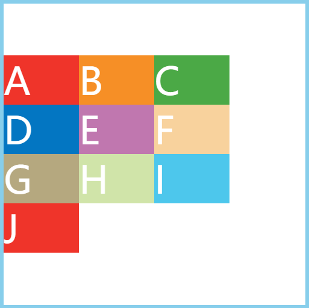
# 同时设置 - 水平垂直居中
main
display grid
width 400px
height 400px
border 5px solid skyblue
grid-auto-rows repeat(4, 100px)
grid-template-columns repeat(3, 100px)
justify-content center
align-content center
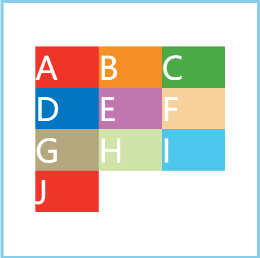
# grid-auto-rows & grid-auto-columns
-
CSS 属性
grid-auto-rows用于指定隐式创建的行轨道大小。 -
用来设置多出来的
itemd的宽和高 -
没有设置
grid-auto-rows时的代码效果
main | |
display grid | |
width 500px | |
height 500px | |
border 5px solid skyblue | |
grid-template-rows repeat(3, 100px) | |
grid-template-columns repeat(3, 100px) |
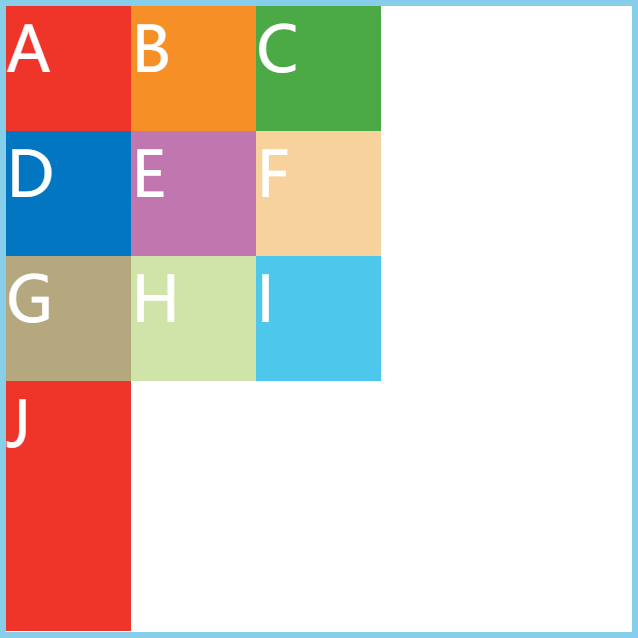
- 设置了
grid-auto-columns 50px这行代码之后，本来只设置三行三列，就是 9 项 (item)，本来有 10 项 (item)，所以多出来的一项就是被设置的属性了
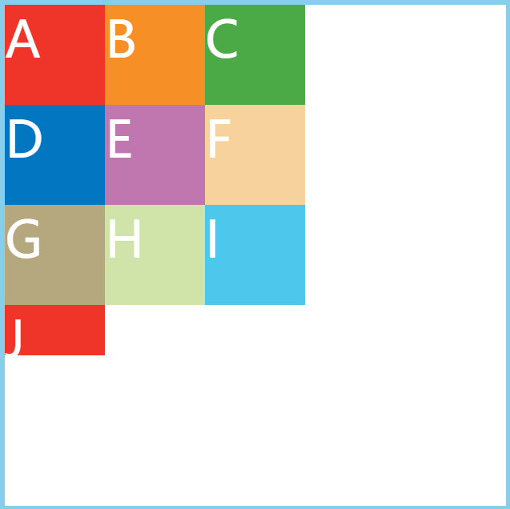
# grid-column-start | end & grid-row-start | end
- 用来指定 item 的具体位置，根据在哪根网格线，可以根据下面这个图参考
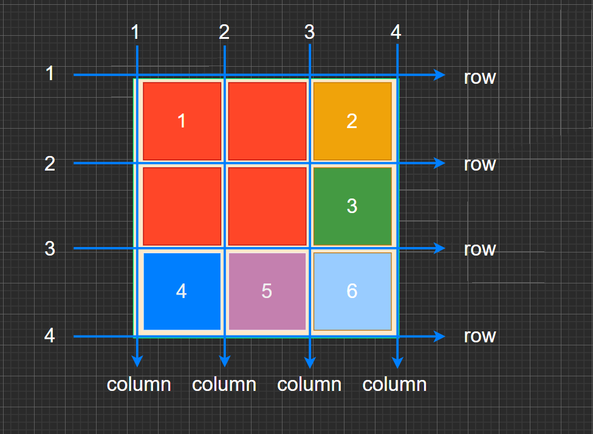
column网格线：start (哪根网格) 到 (end) 哪根网格
main | |
display grid | |
width 400px | |
height 500px | |
border 5px solid skyblue | |
grid-template-rows repeat(3, 100px) | |
grid-template-columns repeat(3, 100px) | |
.item1 | |
grid-column-start 1 | |
grid-column-end 3 | |
background-color #ef342a | |
.item2 | |
grid-column 2 / 4 // 这种方式 (start&end) 是上面两种的简写 | |
background-color #f68f26 |
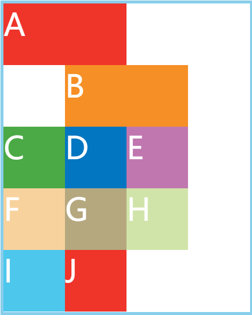
row网格线
main | |
display grid | |
width 400px | |
height 500px | |
border 5px solid skyblue | |
grid-template-rows repeat(3, 100px) | |
grid-template-columns repeat(3, 100px) | |
.item1 | |
grid-row-start 1 | |
grid-row-end 3 | |
background-color #ef342a | |
.item2 | |
grid-row 2 / 3 // 这也是上面两句 (start&end) 的缩写 | |
background-color #f68f26 |
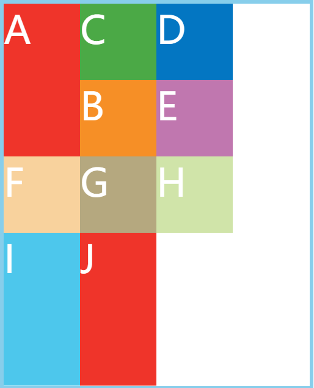
# span
- span 是跨越几网格线
grid-column-start与grid-column-end效果是一样的- 看下面代码演示
main | |
display grid | |
width 400px | |
height 500px | |
border 5px solid skyblue | |
grid-template-rows repeat(3, 100px) | |
grid-template-columns repeat(3, 100px) | |
.item1 | |
grid-column-start span 2 | |
background-color #ef342a | |
.item2 | |
grid-column-end span 2 // 这种和上面 start 是一样的 | |
background-color #f68f26 | |
.item3 | |
grid-column span 4 // 这种就是跨越了 4 个网格 | |
background-color #4ba946 |
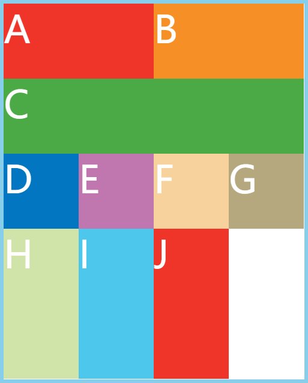
# grid-area
-
CSS 属性
grid-area是一种对于grid-row-start(en-US)、grid-column-start(en-US)、grid-row-end(en-US) 和grid-column-end(en-US) 的简写，通过基线（line），跨度（span）或没有（自动）的网格放置在 grid row 中指定一个网格项的大小和位置，继而确定 grid area 的边界。 -
如果指定了 4 个
<grid-line>的值，grid-row-start会被设为第一个值，grid-column-start为第二个值，grid-row-end为第三个值，grid-column-end为第四个值。当
grid-column-end被忽略时，若grid-column-start为一 ``（自定义关键字数据类型），grid-column-end则为该<custom-ident>；否则为auto。当
grid-row-end被忽略时，若grid-row-start为一<custom-ident>，grid-row-end则为该<custom-ident>；否则为auto。当
grid-column-start被忽略时，若grid-row-start为一<custom-ident>，则所有四项普通写法的属性值均为该值。否则为auto。网格面的属性亦可设为一 `` 作为其名称，然后可通过
grid-template-areas作为其名称，然后可通过grid-template-areas放置。 -
指定项目 (item) 放在哪一个区域
main | |
display grid | |
width 400px | |
height 500px | |
border 5px solid skyblue | |
grid-template-rows repeat(3, 100px) | |
grid-template-columns repeat(3, 100px) | |
grid-template-areas 'a a a' 'b b b' 'c c c' | |
.item1 | |
grid-area a | |
background-color #ef342a | |
.item4 | |
grid-area b | |
background-color #0376c2 |
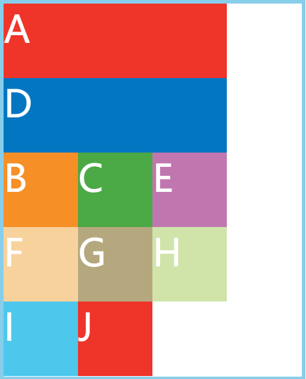
grid-area也有简写方式，依次是grid-row-startgrid-column-startgrid-row-endgrid-column-end
main | |
display grid | |
width 400px | |
height 500px | |
border 5px solid skyblue | |
grid-template-rows repeat(3, 100px) | |
grid-template-columns repeat(3, 100px) | |
grid-template-areas 'a a a' 'b b b' 'c c c' | |
.item1 | |
grid-area 1 / 1 / 3 / 3 | |
background-color #ef342a |
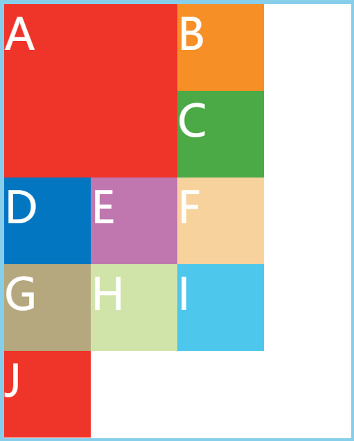
# justify-self & align-self & place-self
-
justify-self 属性设置单元格内容的水平位置 (左中右)，跟
justify-items属性的用法完全一致，但只作用鱼单个项目 (水平方向) -
align-self 属性设置单元格内容的垂直位置 (上中下)，跟
align-items属性的用法完全一致，但只作用鱼单个项目 (垂直方向) -
例如它们的属性也大致一样：justify-self：start | end | center | stretch
-
下面就随便举个栗子
main | |
display grid | |
width 400px | |
height 500px | |
border 5px solid skyblue | |
grid-template-rows repeat(3, 100px) | |
grid-template-columns repeat(3, 100px) | |
.item1 | |
justify-self center | |
background-color #ef342a | |
.item2 | |
justify-self end | |
background-color #f68f26 | |
.item3 | |
align-self center | |
background-color #4ba946 | |
.item4 | |
place-self center | |
background-color #0376c2 |
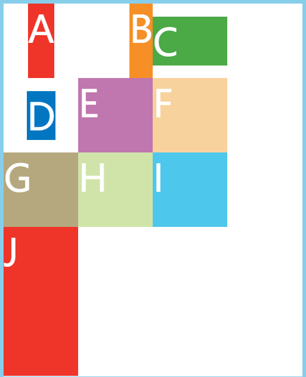